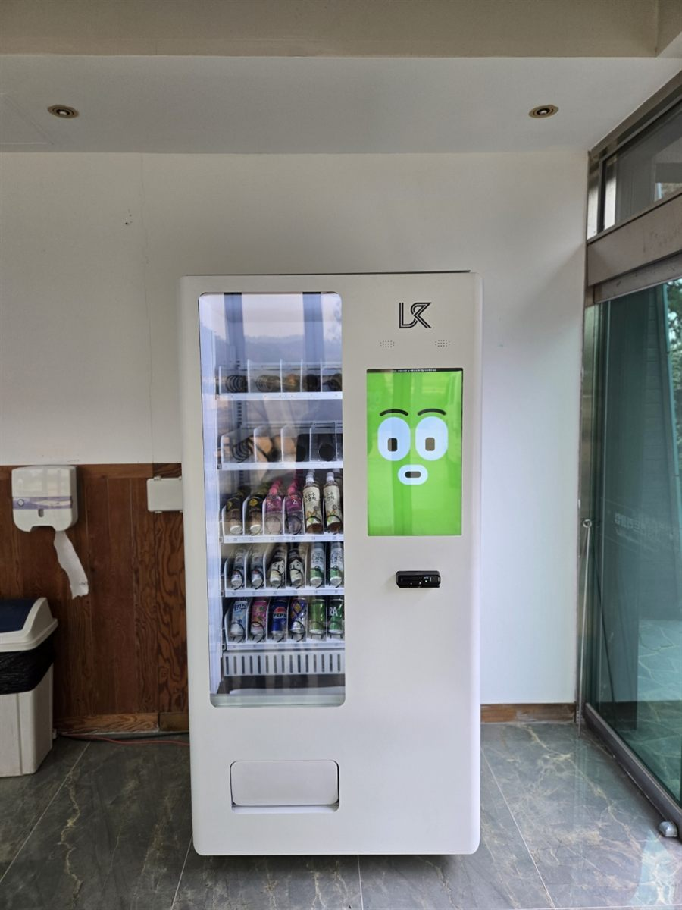

도서관은 한번 들어오면 서너 시간씩 머무는 사람이 많은 곳입니다. 시험 기간의 학생, 자격증을 준비하는 직장인, 아이와 함께 온 가족까지 오래 앉아 있다 보면 목이 마르고 출출해집니다. 그런데 열람실에서는 음식을 먹을 수 없고, 가까운 편의점까지 다녀오기도 번거롭습니다. 로비 휴게공간에 자판기 한 대가 있으면 이 불편이 바로 풀립니다.
이번 자리는 출입문 바로 옆 로비 벽면이었습니다. 도서관에서 먼저 보는 건 열람실과 충분히 떨어져 있는지, 전용 콘센트가 가까운지, 출입 동선을 가리지 않는지입니다. 냉장 자판기는 컴프레서가 돌 때 낮은 소리가 나기 때문에 조용한 공간 쪽 벽은 피합니다. 유리문 옆은 햇빛이 드는 경우가 많아 화면이 잘 보이는지도 함께 확인합니다.
성남 도서관 로비에 맞는 구성
도서관은 음료 중심으로 갑니다. 생수, 캔커피, 차 음료, 이온음료를 기본으로 두고, 흘려도 부담이 적은 뚜껑 있는 페트병 위주로 채웁니다. 냄새가 나거나 부스러기가 많은 간식은 줄이고, 초콜릿·젤리처럼 휴게공간에서 금방 먹을 수 있는 것만 몇 칸 둡니다. 품목은 운영 담당자와 협의해 정하는 게 원칙입니다.
결제는 신용·체크카드와 삼성페이·카카오페이·네이버페이를 받습니다. 학생들은 현금보다 간편결제를 많이 쓰니 이 부분이 중요합니다. 칸별 재고와 매출은 휴대폰 앱으로 확인하므로, 이용객이 적은 시간에 맞춰 조용히 채우러 갈 수 있습니다.
도서관에 놓을 때 좋은 점과 어려운 점
좋은 점은 머무는 시간이 길어 한 사람이 두 번 이상 찾는 경우가 많다는 것입니다. 시험 기간과 방학에는 이용객이 늘어 음료가 빨리 빕니다. 휴게공간이 생기면 열람실 안으로 음료를 들고 들어오는 일도 줄어듭니다.
어려운 점도 분명합니다. 정기 휴관일과 명절 연휴에는 매출이 멈추고, 시험이 끝난 직후에는 이용객이 눈에 띄게 줄어듭니다. 또 공공시설은 설치 전에 사용 허가나 운영 기준 확인 같은 절차가 따로 있는 경우가 많아, 담당 부서와 먼저 이야기해 보시는 게 순서입니다.
성남 무인매장, 이런 자리가 잘 됩니다
성남은 세 구의 성격이 다릅니다. 분당구 판교테크노밸리는 IT 기업 사무동이 모여 있어 사무실 휴게실과 공유오피스 수요가 꾸준하고, 정자·서현·야탑·수내역 주변 학원가에는 스터디카페와 독서실이 많습니다. 분당서울대병원이 있는 구미동 일대는 병원 대기 공간을 찾는 문의가 있습니다.
중원구 상대원동의 성남산업단지는 제조공장이 모여 있어 공장 휴게실 자리가 맞고, 모란시장이 있는 성남동 주변은 유동 인구가 많습니다. 수정구는 가천대 글로벌캠퍼스·동서울대가 있는 복정동, 을지대가 있는 양지동 주변 원룸촌과 위례신도시 창곡동 아파트 단지 상가가 무인매장 자리로 괜찮습니다.
성남 서비스 지역
분당구 — 판교동 · 삼평동 · 백현동 · 운중동 · 정자동 · 수내동 · 서현동 · 이매동 · 야탑동 · 금곡동 · 구미동 · 분당동 · 대장동 · 석운동 · 동원동 · 궁내동 · 율동
수정구 — 태평동 · 신흥동 · 단대동 · 산성동 · 양지동 · 수진동 · 복정동 · 창곡동 · 시흥동 · 고등동 · 금토동 · 오야동 · 사송동 · 신촌동
중원구 — 성남동 · 중앙동 · 금광동 · 은행동 · 상대원동 · 하대원동 · 도촌동 · 여수동
인접한 서울 송파·강남 · 하남 · 광주 · 용인 수지 · 의왕 · 과천까지 같은 조건으로 나갑니다.
성남 무인창업, 이렇게 시작하시면 됩니다
설치비는 받지 않습니다. 자리 확인부터 품목 구성, 기계 반입, 카드 결제 연동, 재고 채우는 방법까지 한 번에 안내해 드립니다. 도서관·주민센터 같은 공공시설은 제출 서류가 필요한 경우가 있어 견적서와 설치 위치 사진을 따로 정리해 드립니다.
비용은 구입이 렌탈보다 유리한 편입니다. 렌탈료를 몇 년 내는 것보다 처음에 사 두는 쪽이 총액이 낮게 나오는 경우가 많습니다. 구성별 36개월 총비용은 구입 vs 렌탈 비교 가이드에 정리해 두었습니다.
성남 무인자판기 설치 상담
로비나 휴게공간 사진 한 장만 보내 주셔도 됩니다. 콘센트 위치와 동선을 보고 어떤 크기가 맞을지 먼저 봐 드린 뒤 견적을 보내 드립니다.
※ 사진은 픽포스가 시공한 설치 사례이며, 글에 적힌 지역의 현장 사진은 아닙니다. 자판기 구성과 품목은 자리와 업종에 따라 달라지며, 공공시설은 기관 규정에 따라 설치 위치나 품목에 제한이 있을 수 있습니다. 정확한 금액은 견적서로 안내드립니다.